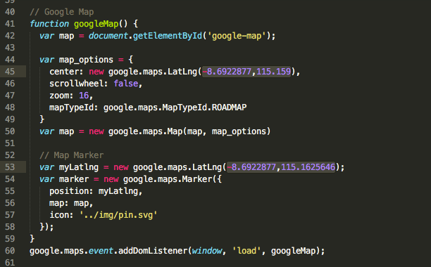
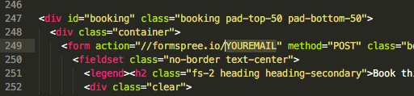

Thank you for purchasing the Tourly template! I hope you enjoy the template and make something beautiful from it.
Please read all the documentation below and feel free to email me if you have any further questions.
Before setting up the template, please make sure you have the following tools and basic knowledge:
sudo npm i gulp -g
To get started, unzip the Tourly files contents into an appropriate location.
Open Git Bash for Windows or Terminal on Mac or Linux and cd into the Tourly template location.
cd dev/tourly-one-page-html-css-template
After you're in the working directory, run npm install and wait for all the packages to install.
Once the packages have installed, run the command gulp and Tourly should automatically launch in a new browser window.
When you go into the Tourly project, you should see 2 folders:
During development, all work and modifications are to be made in the src/ (short for source) folder.
The final website is compiled into the dist/ (short for distribution) folder.
Note: You can run gulp clean in the terminal to remove the dist folder and run gulp build to republish your project in the dist folder.
Tourly is built on top of Base – a minimal HTML/CSS framework similar to Bootstrap and Foundation, but a lot more lightweight.
It includes normalise, resets, typography, lists, blockquotes, code blocks, forms and a 12 column responsive grid. If you would like a better understanding of what's in the framework, please check out the Base Docs
To get started, open terminal and cd into the tourly-one-page-html-css-template project.
Inside the project, run the command gulp.
Your web browser should launch with the Tourly website loaded.
You can know open the folder with Sublime and start making changes to files within the src/ folder and you should notice the website auto reload everytime you make a change.
The Banner backround image can be changed by navigating into the banner SCSS file
src/scss/styles/_banner.scss
...
...
...
...
...
To change the map coordinates, open the default.js file in Sublime text editor.
src/js/default.js
You can edit lines 45 and 53 to updates the geo coordinates.
To change the email in the booking form, open index.html in Sublime text editor
src/index.html
Modify the form spree URL.
...
Thank you for your support and if you have any support questions or would like to say hi, simply email me.